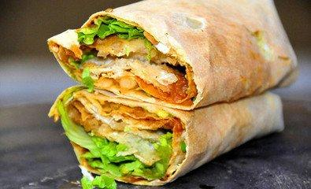
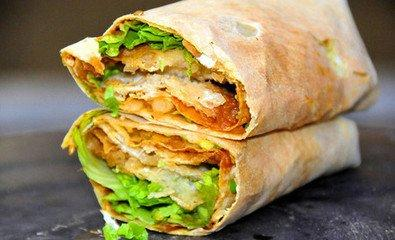

干炒牛河
粤式干炒牛河，色泽油润亮泽、牛肉滑嫩焦香、河粉爽滑筋道、入口鲜香味美、配料多样丰富。盘中干爽无汁。
不但土生土长的广州人热爱它，吃过的游客也对它念念不忘。 因此干炒牛河做为经典的广东小吃被列入中华名小吃。
2012年入选纪录片《舌尖上的中国》第二集《主食的故事》系列美食之一。
酱爆花蛤
“虽然炎炎的夏日已过，可是偶尔还有几天的秋老虎发威。在热意四射的那几天，开一瓶
冰啤酒，再加上一盘酱爆花蛤真是绝配呀。”花蛤肉味鲜美、营养丰富，蛋白质含量高，氨基
酸的种类组成及配比合理;脂肪含量低，不饱和脂肪酸较高，易被人体消化吸收，还有各种维
生素和药用成分。
宵夜小吃系列
 
